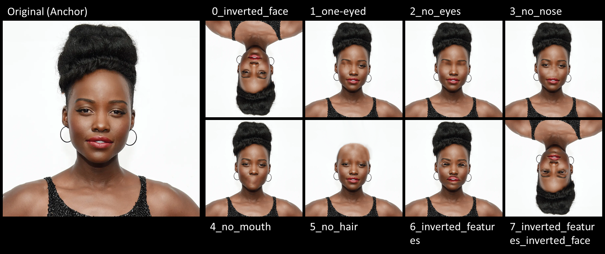

Controlled Single-Face Variations
Variations include: inverted face, one-eyed, no eyes, no nose, no mouth, no hair, inverted features, inverted features inverted face
The first experiment looks at a single image of a celebrity's face as an anchor, and compares how both models perform using different variations. Considering findings on human vision and how faces are processed holistically by the human brain (cf. Watson), the first variation is looking at upright faces versus inverted (upside-down) faces. Other variations in this first experiment involve obfuscating, one at a time, unique elements that make a face distinctive, including eyes, nose, mouth and hair. To add an extra layer of complexity, the last variation of the experiment looks at inverting features within a face, without changing the face's orientation (see "6_inverted_features"). This effect is evident to the human eye when the face is upright, but becomes almost invisible if the face is inverted. The idea is to see if this behavior is replicated for the machine.
Using a Google Colab Notebook to play with the FaceNet and Face Transformer models, the next step is to feed the manipulated images to both models. This step allows us to compute the embeddings for a set of images for a given face model, using a list of images located in the images folder, and compute the embeddings. We can then access the embeddings for each image by name. The code tries to locate the faces in the image we supplied, so we can look at what the final cropped images look like. Finally, we can compare embeddings for any pair of images, and we observe the Euclidean distance between each pair of images. The larger the distance, the bigger the model's perceived difference between the images.
Observations
Both the Face Transformer (FaceVit) and FaceNet models seem to process faces holistically, as observed by the fact that the biggest Euclidian distance to the anchor is with the two images that are upside-down (variation #0 and variation #7). FaceNet seems to perform bettwe at face processing: the Euclidian distance between manipulated images is much lower than that of Face Transformer. FaceNet has a harder time recognizing a face with no eyes, while Face Transformer has a harder time identifying a face without a nose.
Further Evidence
The same experiment is performed with five other celebrity faces of different ethnicities, to validate whether the same behavior is observed across faces. With some minor variations, the same results are observed across different examples, with consistently better performance for FaceNet, where Euclidian distances between the anchor and the modified images are in average lower than with FaceVit.

Conclusion
There don't seem to be substantial differences in how Face Transformer and FaceNet perform in recognizing faces holistically. Both are more likely to recognize an upright face than a face upside-down, whether the elements in the face are upright, or inverted. If we were to measure a holistic processing index, it seems like FaceNet is able to process with a higher incidence than Face Transformer.